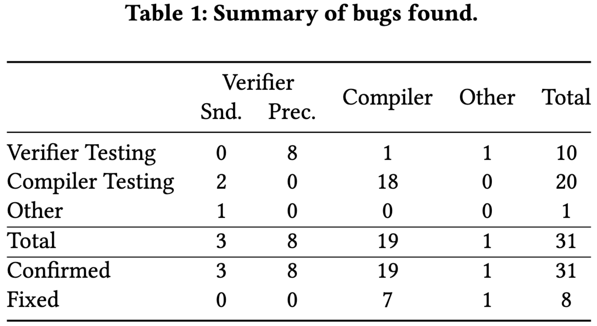

Proofs: Independent Checking

Modern, state-of-the-art automated verification tools, like Dafny, have bugs.
So do SMT solvers, which are used under the hood.
Users should not "have to rely on the correctness of a large and frequently-changing code base."
We need to generate end-to-end proofs that can be checked independently.
Irfan et al. (2022); Blotsky et al. (2018); Barrett, de Moura, and Fontaine (2015)